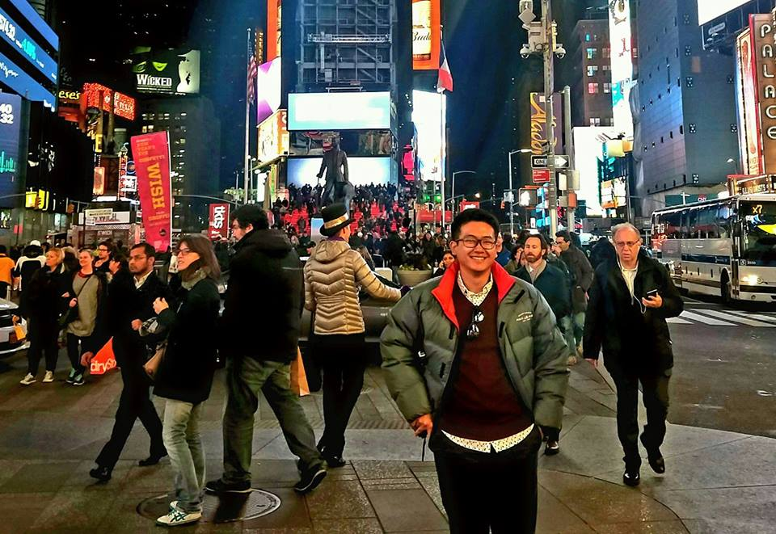

1. Michael Ray A. Mauricio 2. Kel 3.  4. My favorite cmsc subject would be 131 because I had fun with assembly. 5. Hum 2 because dito lang yung subject na nakapag fieldtrip ako and met cool people during the trip 6. My favorite language would be java kasi madami kang pwedeng gawin (pero di ako magaling mag java). 7. My favorite food would be burgers together with fish and chips. 8. When I was a kid, I dreamt of a lot of things. I dreamt to be a doctor, a professional athlete, a professional F1 racer, and I dreamt of a happy and peaceful world.